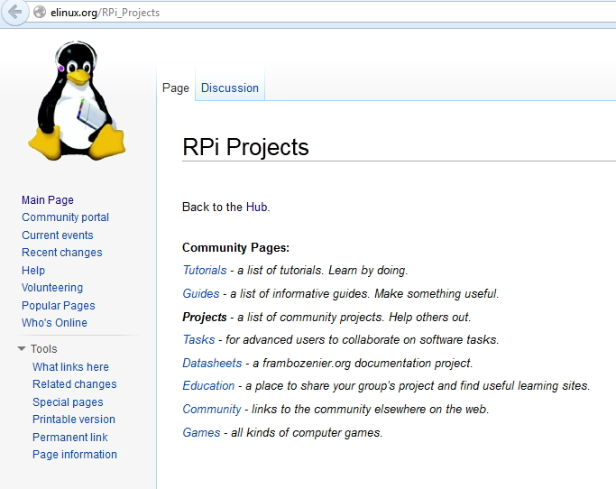

2.
3.
4.
ETC.....
Most of the forum posts came from http://www.raspberrypi.org site forum topics.
Here is some topic links. Most of the posts from year 2012.
. 1.

Rpi Run A Python Script At Boot By Crontab.
Link Downloaded : \Dropbox\LINUX\DOCS\EBOOKS\Running A Python Script At Boot Using Cron _ Raspberry Pi Spy.pdf
Install DLNA/uPnP on RPi Debian.
Link Downloaded : \Dropbox\LINUX\DOCS\LINUXSETUP\web\UPnP DLNA Raspberry-at-home.pdf Minibian RPi Modyfied Small Debian.Link
Install Wayland Desktop Env At Another Platform.
Link Installing TP-Link TL-WN725N V2 ON RASPBIAN kernel 3.12.22+.
Link
In case of Raspbian update of kernel 3.12.22+, we need to get the updated driver for this TP-Link adapter. This website provides support for this adapters driver module and firmware.
Following article shows detailed instructions.


This articles shows instructions for kernel 3.10.25+ but in the middle of 2014 the kernel is 3.12.22+. So we need to download the proper driver module match with the kernel.
sudo cp 8188eu.ko /lib/modules/`uname -r`/kernel/drivers/net/wireless
sudo chown root:root /lib/modules/`uname -r`/kernel/drivers/net/wireless/8188eu.ko
sudo cp rtl8188eufw.bin /lib/firmware/rtlwifi/
sudo chown root:root /lib/firmware/rtlwifi/rtl8188eufw.bin
sudo depmod -a
sudo modprobe 8188eu
Here
SSH session works ok. I used following commands from android terminal to log into the RPi. user:pi pass:redhat.
Then user and password prompt appears. From PC I use Fire SSH for log in to RPi.
Install tightvncserver and use some aptitude (package manager) commands.
Link
Before installing any program in RASPBIAN, you need to update and upgrade the system by following commands:
Install tightvnc server by following command:
Follow this link to install and use vnc:
You can use aptitude to search for installed programs as:
This command will find all packages that contains name "vnc". The indicator 'p' or 'i' indicates not installed or installed.
Create a script named vncstart like following snipped to start a X session virtually:
#!/bin/bash
vncserver :0 -geometry 1024x768 -depth 24 -dpi 96
Then use following command to make the script executable:
Use following command to stop / kill virtual session:
Apply following instructions to run a X session during startup.
When connecting from VNCVIWER, you need to use the IP address of the VNCSERVER with port number (optional). Generally VNCSERVER port starts from 5900. For display 0 port number is 5900 and for display 1 port number is 5901.
Note: some guides tell you to add :1 on the end of the hostname. This is the VNC display number. It is used to calculate which port of the VNC server to connect to. Display zero ( :0 ) is port 5900, display one is port 5901, and so on. If you do not specify a display number on the end of the hostname, the VNC client will attempt to connect to display zero which, if you used the above instructions, will be what the VNC server is listening on. (It is also possible to specify the port directly using the notation hostname::port, e.g. 192.168.1.2::5900.
Capture Image With RPI in Wheezy .Link

Next.